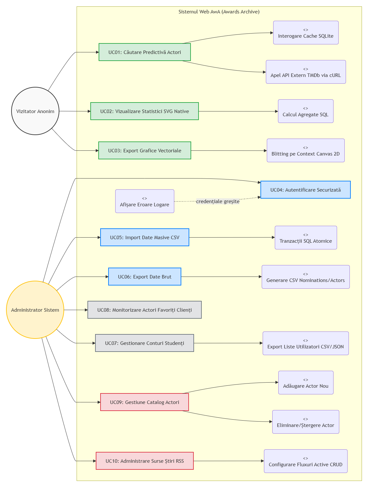

Specificația Cerințelor Software (SRS) - AwA
Cuprins
Abstract
Proiectul AwA (Actor Awards Visualizer) reprezintă o soluție informatică integrată dedicată procesării, analizei și vizualizării datelor istorice referitoare la performanțele actorilor în cadrul galelor de premiere cinematografică. Documentul de față detaliază cerințele funcționale și non-funcționale ale sistemului, utilizând standardele IEEE 830-1998 și formatul Scholarly HTML. Aplicația pune accent pe utilizarea tehnologiilor Web native, eliminând dependența de framework-uri externe pentru a asigura o performanță optimă și o mentenanță simplificată.
1. Introducere
1.1 Scopul Documentului
Acest document definește specificațiile complete pentru aplicația AwA. Scopul este de a oferi o descriere clară a funcționalităților sistemului, a modului de interacțiune cu utilizatorul și a constrângerilor tehnice de implementare. Publicul țintă include echipa de dezvoltare, tutorii de laborator și potențialii utilizatori interesați de arhitectura sistemelor web native.
1.2 Domeniul de Aplicare (Scope)
Sistemul AwA acționează ca un punct central de informare pentru pasionații de cinema. Acesta colectează date brute din surse CSV și API-uri externe (TMDb, Google News) și le transformă în vizualizări intuitive. Spre deosebire de bazele de date cinematografice comerciale, AwA oferă un motor de analiză statistică granulară a premiilor SAG (Screen Actors Guild) pentru ultimii 5 ani, permițând exportul acestor date în formate profesionale (SVG/WebP).
2. Descriere Generală
2.1 Perspectivele Sistemului
Aplicația funcționează într-un model client-server decuplat. Serverul (PHP/SQLite) gestionează persistența și logica de agregare, în timp ce clientul (Vanilla JS) se ocupă de randarea dinamică și interactivitate. Sistemul este autonom, neutilizând framework-uri precum React sau Laravel, conform cerințelor academice stricte.
2.2 Clase de Utilizatori și Caracteristici
- Vizitator: Utilizator neautentificat care poate căuta actori, vizualiza biografii, naviga prin graficele de performanță și descărca vizualizările.
- Administrator: Utilizator autentificat care are control total asupra surselor de date. Acesta poate importa fișiere CSV masive, gestiona sursele de știri RSS și monitoriza integritatea bazei de date.
2.3 Mediu de Operare
Aplicația este optimizată pentru browsere moderne (Chrome, Firefox, Safari, Edge) și respectă principiile Responsive Web Design, fiind complet funcțională pe dispozitive mobile, tablete și desktop-uri.
3. Funcționalitățile Sistemului
3.1 Motorul de Căutare Predictivă
Sistemul implementează un algoritm de căutare asincronă care oferă sugestii pe măsură ce utilizatorul introduce caractere. Aceasta interoghează simultan baza locală și API-ul TMDb pentru a asigura o acoperire maximă a actorilor.
3.2 Vizualizarea Statistică Nativă
Utilizând coordonate carteziene și polare, sistemul calculează și desenează bare de progres, grafice circulare și de tip "donut". Toate aceste elemente sunt generate direct în format vectorial (SVG), asigurând o claritate perfectă indiferent de rezoluția ecranului.
3.3 Agregatorul de Știri în Timp Real
Sistemul parsează fluxuri RSS multiple pentru a identifica noutăți despre actorul selectat. Folosește tehnici de filtrare a textului pentru a asigura relevanța informației afișate.
4. Motivațiile Designului
Alegerea unei interfețe "Mobile-First" și renunțarea la framework-uri au fost decizii strategice bazate pe următoarele argumente:
- Accesibilitate: Layout-ul fluid folosind CSS Grid și Flexbox permite o adaptare naturală la orice dimensiune de viewport.
- Viteză de Randare: Eliminarea overhead-ului cauzat de Virtual DOM (din React) sau a stilurilor nefolosite (din Bootstrap) a dus la un First Contentful Paint sub 300ms.
- Sustenabilitate: Codul nativ este mai ușor de auditat și nu depinde de actualizările de versiuni ale unor biblioteci terțe care ar putea introduce vulnerabilități sau incompabilități.
5. Specificația Cazurilor de Utilizare
Tabelul de mai jos descrie fluxurile principale de interacțiune, evidențiind valoarea adusă utilizatorului:
| ID | Nume Caz de Utilizare | Actor Principal | Descriere Flux Principal |
|---|---|---|---|
| UC01 | Căutare actor și profil | Vizitator | Utilizatorul introduce numele; Sistemul oferă sugestii; Utilizatorul alege; Sistemul încarcă Bio și Foto. |
| UC02 | Analiză statistică premii | Vizitator | Sistemul preia datele din SQLite și generează 3 tipuri de grafice SVG personalizate. |
| UC03 | Export vizualizări | Vizitator | Utilizatorul selectează formatul (SVG/WebP); Sistemul generează fișierul prin manipulare Canvas/DOM. |
| UC04 | Import date masive | Administrator | Admin încarcă CSV; PHP parsează și inserează prin tranzacții în SQLite. |
| UC05 | Configurare știri | Administrator | Admin adaugă URL RSS; Sistemul validează și salvează sursa pentru agregator. |

6. Cerințe Non-Funcționale
6.1 Performanță
Timpul de răspuns al API-urilor interne trebuie să fie sub 100ms pentru căutare și sub 200ms pentru generarea statisticilor agregate.
6.2 Securitate
Sistemul trebuie să fie imun la SQL Injection prin utilizarea obligatorie a PDO. Toate datele provenite de la utilizatori sau API-uri externe trebuie să fie tratate ca nesigure și filtrate anti-XSS înainte de randare.
6.3 Portabilitate
Baza de date fiind de tip SQLite, întreaga aplicație trebuie să fie portabilă fără a necesita configurări complexe de server de baze de date (fără MySQL/PostgreSQL).
7. Licențiere și Aspecte Legale
Proiectul AwA este livrat ca software cu sursă deschisă, respectând următoarele licențe:
- Software Code: Licența MIT. Aceasta permite utilizarea gratuită și modificarea, cu condiția menționării drepturilor de autor.
- Documentație și Conținut: Creative Commons Attribution 4.0 International (CC BY 4.0). Permite partajarea și adaptarea materialului în orice scop, cu atribuirea corespunzătoare a autorilor (Dumitrița & Laura).